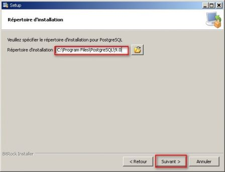
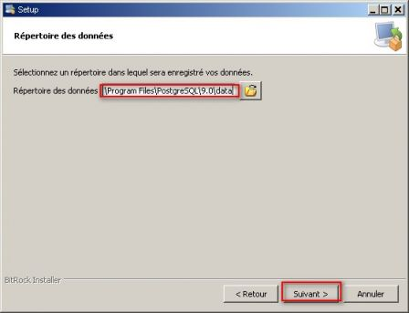
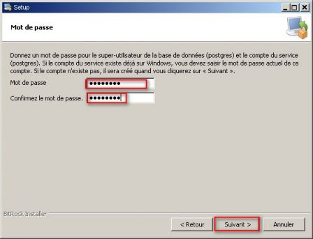
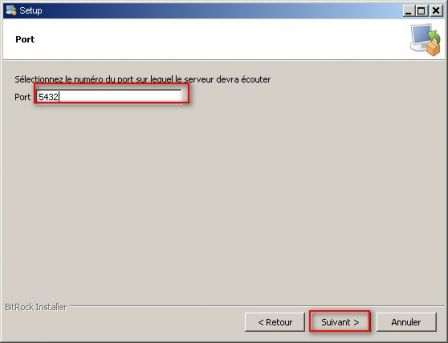
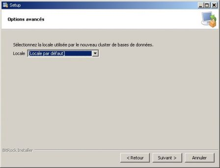
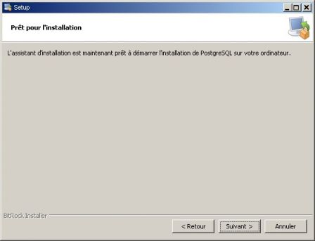
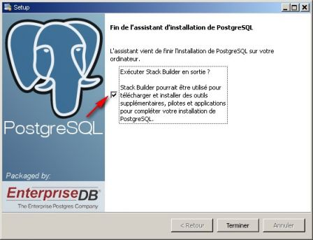
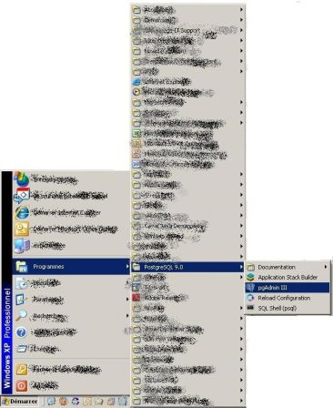
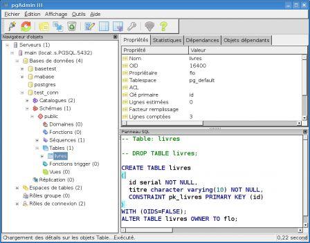

I Introduction
A. Pourquoi ce document?
J'ai commencé à développer sous PostgreSQL assez récemment après une longue expérience sous Oracle. La documentation générale de PostgreSQL est excellente, et très riche, mais j'avais besoin d'un document plus léger expliquant la procédure d'installation sur différents systèmes et comment démarrer (créer un cluster, configurer les connexions), ainsi que des informations sur ce qu'on pouvait faire avec PostgreSQL. Je ne l'ai pas trouvé. Après quelques mois d'utilisation, je me suis rendu compte que les problèmes des débutants étaient toujours les mêmes. Ainsi, j'ai compilé mes notes des débuts et ce que j'ai appris depuis dans ce document. Voici le résultat, en espérant qu'il vous aide à débuter et qu'il vous encourage à continuer avec PostgreSQL.
B. À qui s'adresse ce document?
Ce document a pour but de vous aider à installer PostgreSQL sous Windows ou sous Linux, et à commencer à développer.
Il est écrit pour vous faire gagner du temps dans vos premiers pas avec PostgreSQL, tout en vous expliquant les points importants afin que vous puissiez progresser par vous-même. Il s'adresse donc principalement aux développeurs d'applications, afin de leur permettre de découvrir ce puissant moteur sur une petite base de test, ou aux personnes qui débutent complètement avec PostgreSQL. Vous n'aurez pas besoin de connaissances système avancées pour suivre ce document.
Une fois que vous aurez terminé la lecture de ce document, vous pourrez continuer par la lecture de la documentation officielle pour apprendre à administrer PostgreSQL ou devenir un développeur aguerri. La dernière section de ce document vous donne les liens et références nécessaires pour continuer à progresser. Parfois les informations ne sont volontairement pas complètes, et lorsque la documentation de référence est plus claire et précise que ce qui aurait pu être fait ici, les liens sont fournis vers la documentation française.
Ce document a été écrit initialement pour la version 8.3, puis mis à jour pour la version 9.0 (voir le chapitre sur les versions).
Avertissement : ce document n'est en aucun cas un document sur le tuning de la base. Il n'est pas fait non plus pour vous apprendre à administrer une base de production.
II Présentation de PostgreSQL
PostgreSQL est un moteur de bases de données relationnelle. C'est un moteur adapté à des bases métier, donc riche en fonctionnalités et puissant. Son installation est cependant plutôt simple. Il faut juste comprendre quelques principes de base (ce que cette présentation s'efforce de faire)
Si vous ne connaissez pas les principes relationnels ou le SQL, le mieux est de vous procurer un bon ouvrage sur le sujet. L'article de Wikipedia peut être une bonne introduction (http://fr.wikipedia.org/wiki/SQL), et donne de nombreuses références. Le tutoriel de la documentation PostgreSQL peut également vous rendre service si vous avez besoin de vous rafraîchir la mémoire : http://docs.postgresqlfr.org/9.0/tutorial-sql.html
A. Licence
La licence de PostgreSQL est une licence de type BSD, ce qui permet son utilisation sans restriction, dans un logiciel libre ou propriétaire. C'est un avantage certain, car cela permet par exemple d'utiliser PostgreSQL comme base de données pour un logiciel propriétaire.
PostgreSQL est un projet indépendant. Il n'est détenu par aucune entreprise. La communauté PostgreSQL est très réactive (allez voir les mailings-lists si vous voulez vérifier). De nombreuses entreprises soutiennent et participent également au développement de PostgreSQL.
B. Caractéristiques et fonctionnalités :
PostgreSQL comporte de nombreuses fonctionnalités intéressantes. Parmi celles-ci, on peut citer par exemple : moteur transactionnel respect des normes SQL MVCC (mécanisme permettant une concurrence efficace sans verrouiller les enregistrements pour assurer l'isolation des transactions) procédures stockées dans de nombreux langages triggers réplication maître-esclaves en continu par application des journaux binaires (archives WAL), esclaves accessibles en lecture.
PostgreSQL est conçu pour être robuste (aucune version ne sort sans avoir subi une suite extensive de tests) et peut supporter des volumes importants de données (ainsi par exemple Météo France gère une base de 3,5To).
PostgreSQL est conçu pour pouvoir supporter des extensions. Des extensions et outils sont disponibles pour compléter le moteur, par exemple :
- PostGis : moteur de données spatiales.
- Slony : réplication maître-esclaves.
- Et de nombreux autres.
III Installation
Avant de passer aux procédures d'installation proprement dites, il est nécessaire de comprendre certaines notions fondamentales.
A. Vocabulaire
1. Base
Une base est un ensemble structuré de données. On utilise généralement une base de donnée par application. Pour pouvoir créer une base de données, vous devez disposer d'un cluster de bases de données.
2. Cluster (ou grappe de base de données)
Un cluster est un ensemble de bases de données qui partagent les mêmes ressources (processus, mémoire, disque...) .
3. Schéma
Un schéma est un espace de nommage au sein d'une base de données.
B. Principes de base
1. Comptes système
Les processus de PostgreSQL utilisent un compte système. Généralement c'est le compte postgres qui est utilisé pour cela, sauf si vous avez installé PostgreSQL sur votre compte (voir la partie compilation).
2. Rôles
Les droits de la base de données sont gérés par des rôles. Avant de pouvoir vous connecter à la base de données, le rôle que vous utilisez doit avoir les autorisation nécessaires.
http://docs.postgresql.fr/9.0/user-manag.html
À retenir: les comptes systèmes et les rôles de base de données sont distincts! Même s'il y a des possibilités de mapping entre les deux (cf. paragraphe sur pg_hba.conf) La confusion entre ces 2 notions est une des causes fréquentes d'erreurs et de problèmes d'installation pour les débutants.
3. Versions (mineures/majeures)
Les versions majeures comprennent le chiffre avant le point et un chiffre après. Exemple : 8.2 et 8.3 sont des versions majeures différentes. Les versions mineures incrémentent la 3ème partie : exemple : 8.3.7 Pour changer de version mineure, il suffit de mettre à jour le moteur. Mais pour changer de version majeure, il est nécessaire de décharger puis recharger les données.
Plus d'informations ici : http://www.postgresql.org/support/versioning
4. Client/serveur
PostgreSQL est une application client/serveur. Le serveur gère les fichiers de la base de données, accepte les connexions des clients, et effectue les opérations demandées par les clients (requêtes...) Le client peut prendre de nombreuses formes. Il existe par exemple un client en ligne de commande (psql), des clients graphiques (par exemple pgAdmin3)... Le client peut être sur la même machine que le serveur, ou bien communiquer avec lui par le réseau.
5. Processus serveur
Sous Windows, le serveur PostgreSQL tourne en tant que service. Sous Linux, ce sont des démons système qui effectuent ces tâches. (si vous êtes curieux, vous pouvez aller voir cet article : http://dalibo.org/glmf112_les_processus_de_postgresql) Il ne faut pas arrêter les processus du serveur n'importe comment. Pour arrêter le serveur, il faut utiliser les outils fournis (voir la section sur l'arrêt et le démarrage du serveur). NB : par défaut, PostgreSQL est configuré pour écouter sur le port 5432. Les outils se connectent par défaut sur ce port : pensez à cela si vous devez modifier ce paramètre.
6. Module de contribution
Ce sont des extensions intéressantes, maintenues par le projet, mais non intégrées au coeur du moteur. Exemples :
- adminpack (fonctions supplémentaires, utilisées par les outils d'administrations comme pgAdmin3)
- pg_buffercache (pour savoir ce qui est présent dans le cache)
- pg_freespacemap : donne la liste des blocs vides et partiellement vides des tables et index (quantité d'espace libre dans chaque objet de la base)
- pgcrypto : fonctions de cryptographie
C. Exemple
Pour l'installation et la suite, nous prendrons l'exemple de la création d'une base de données mabase, qui sera utilisée et gérée par un utilisateur tom.
D. Sous Windows
À partir de la version 8.0, PostgreSQL fonctionne nativement sous Windows (Windows XP, Windows 2000, Windows 2003, Vista, Windows 2008...). Malgré tout, seules les versions à partir de la 8.2 sont supportées sous Windows. Il s'installe en tant que service.
NB : si vous regardez dans la liste des processus, plusieurs processus postgres sont présents. Gardez à l'esprit que la mémoire est partagée entre ces processus : la mémoire utilisée par PostgreSQL est donc inférieure à la somme de la mémoire utilisée par chaque processus qui est affichée dans le gestionnaire de tâches...
1. Où trouver PostgreSQL pour Windows?
Vous pouvez trouver deux types d'installeurs pour Windows : l'installeur "en un clic", ou l'installeur "pgInstaller". Le premier est créé par EnterpriseDB, le seconde par la communauté. Vous les trouverez à partir d'ici : http://www.postgresql.org/download/windows "pgInstaller" n'est disponible que pour les versions 8.2 et 8.3, le document détaille donc le processus d'installation pour l'installeur «en un clic ». NB: il est possible de récupérer les binaires sans l'installeur (pour utilisateurs avancés uniquement), ou de faire une installation silencieuse (voir sur le site de EnterpriseDB)
2. Installation
Lancez l'installeur (pour Postgresql 9.0, le fichier s'appelle : postgresql-9.0.0-1-windows.exe )
NB: L'installeur logue toutes ses actions dans un fichier install-postgresql.log qui est dans le répertoire %TEMP% de Windows. En cas de problème, consulter ce fichier.

Le répertoire est celui où vont s'installer le programme serveur (postgres.exe) et les outils client (psql, pgdump...), ainsi que la documentation, etc...
L'installeur ne permet actuellement pas d'installer les outils client et le serveur séparément.

L'installeur demande ensuite où sera créé le cluster de données. Il sera par la suite toujours possible de créér d'autres cluster avec l'outil initdb.

L'installeur demande le mot de passe de l'utilisateur postgres. Attention, en réalité ceci recouvre 2 notions différentes : un utilisateur du système d'exploitation, celui sur le compte duquel fonctionnent les programmes du serveur, le super-utilisateur de base de données. Ils peuvent très bien avoir des noms et des mots de passe différents, mais pour cet installeur, il a été choisi de donner le même nom et le même mot de passe.
Si l'utilisateur postgres du système d'exploitation existe déjà, il faut donner le mot de passe existant. Si vous l'avez oublié, vous pouvez le changer dans une console avec la commande net user :
net user postgres <motdepasse>
Attention à ne pas mettre un mot de passe trivial à l'utilisateur postgres (c'est encore plus important si vous autorisez les connexions à partir du réseau!). Évitez également de lui donner le même mot de passe que celui de l'utilisateur système postgres. En effet, l'utilisateur postgres dispose de tous les droits sur le cluster.

Par défaut, le port sur lequel le serveur attend les connexions est le port 5432. Vous pouvez changer le numéro de port d'écoute. Attention dans ce cas à configurer correctement vos clients (JDBC, etc...)
Remarque : par défaut, postgres n'acceptera pas les connexions à partir du réseau. Ceci est parfait sur un poste de développement autonome, mais pas pour un serveur. Cela pourra être modifié par configuration.

La locale définit le comportement du cluster pour les opérations de tri (ordre alphabétique) … Par défaut, c'est celle du système qui est utilisée, mais vous pouvez en préférer une autre.

Si vous êtes certain(e) du paramétrage, vous pouvez cliquer sur « Suivant».

L'installation est terminée. Si vous souhaitez installer des modules complémentaires (phppgAdmin, Slony...), lancez l' outil Stackbuilder.

L'installation sous Windows est prête à être utilisée. Dans le menu démarrer, vous pouvez retrouver tous les outils utiles pour gérer le serveur.
Si vous avez conservé les options par défaut, les fichiers du cluster se trouvent dans C:\Program Files\PostgreSQL\9.0, et vous trouverez l'outil pour désinstaller dans le même répertoire.
NB : notes sur la console Windows et psql La console Windows est par défaut dans un encodage compatible DOS (par exemple CP850). Lorsque vous démarrerez psql pour la première fois, vous aurez le message d'avertissement suivant :
Attention : l'encodage console (850) diffère de l'encodage Windows (1252). Les caractères 8 bits peuvent ne pas fonctionner correctement. Voir la section « Notes aux utilisateurs de Windows » de la page référence de psql pour les détails.
Il est recommandé de modifier l'encodage de la console, Pour éviter cela, vous pouvez éditer le fichier C:\Program Files\PostgreSQL\9.0\scripts\runpsql.bat en ajoutant la ligne :
chcp 1252
avant le lancement de psql.
Remarque importante : si vous avez installé PostgreSQL sur un poste de travail (dans le but par exemple de l'évaluer ou de vous familiariser avec lui), vous avez maintenant une installation qui fonctionne « à la sortie de la boîte », et vous pouvez commencer à l'utiliser via l'outil pgAdmin (crééer des bases, etc...). Mais si vous souhaitez autoriser des connexions distantes, il est indispensable de lire la suite du document. Il apporte également des informations qui pourraient vous être utiles (emplacement et rôle des différents répertoires...) même si vous utilisez peu les outils en ligne de commande. Vous pouvez maintenant passer à la section « après l'installation » si vous le souhaitez.
IV Après l'installation
Dans toute la suite du document, nous supposons que l'utilisateur système sous lequel PostgreSQL a été installé est postgres. Si ce n'est pas le cas, remplacez par l'utilisateur qui démarre le serveur. Conseil : avant toute modification de fichier de configuration, pensez à sauvegarder la version initiale du fichier! Une erreur est si vite arrivée...
A. Processus et emplacement des fichiers.
L'emplacement des fichiers de configuration et des fichiers du cluster dépend de votre distribution. Le répertoire contenant les fichiers du cluster est couramment appelé PGDATA (du nom de la variable d'environnement correspondante). Par exemple : /var/lib/pgsql/data (Linux) ou C:\Program Files\PostgreSQL\9.0\data (Windows) Normalement, le fichier postgresql.conf est dans le répertoire du cluster. Cependant, cela peut être autrement (sur Debian, tous les fichiers de configuration doivent être dans /etc) Voici un moyen de retrouver leur emplacement sous Linux ou Unix si vous l'avez oublié. Liste des processus nommés "postgres" : (exemple sur une Debian):
flo:~# ps -ef | grep postgres | grep -v grep postgres 2797 1 0 06:14 ? 00:00:00 /usr/lib/postgresql/9.0/bin/postgres -D /var/lib/postgresql/9.0/main -c config_file=/etc/postgresql /9.0/main/postgresql.conf postgres 2798 2797 0 06:14 ? 00:00:00 postgres: logger process postgres 2800 2797 0 06:14 ? 00:00:00 postgres: writer process postgres 2801 2797 0 06:14 ? 00:00:00 postgres: wal writer process postgres 2802 2797 0 06:14 ? 00:00:00 postgres: autovacuum launcher process postgres 2803 2797 0 06:14 ? 00:00:00 postgres: stats collector process flo:~#
Voyez que le processus 2797 est le père de tous les autres :
postgres 2797 1 0 06:14 ? 00:00:00 /usr/lib/postgresql/9.0/bin/postgres -D /var/lib/postgresql/9.0/main -c config_file=/etc/postgresql/9.0/main/postgresql.conf
le chemin derrière le -D est l'emplacement du cluster. Celui derrière le -c l'emplacement du fichier de configuration.
config_file=/etc/postgresql/9.0/main/postgresql.conf
Normalement, les autres fichiers de configuration du cluster (pg_hba.conf, pg_ident.conf) sont dans le même répertoire .
/usr/lib/postgresql/9.0/bin/postgres
est l'emplacement des binaires.
Arborescence du répertoire du cluster:
flo:/var/lib/postgresql/9.0/main# ls -l total 48 drwx-- 11 postgres postgres 4096 mai 10 15:19 base drwx-- 2 postgres postgres 4096 mai 10 18:29 global drwx-- 2 postgres postgres 4096 avr 4 19:58 pg_clog drwxr-xr-x 2 postgres postgres 4096 mai 10 08:15 pg_log drwx-- 4 postgres postgres 4096 avr 4 19:58 pg_multixact drwx-- 2 postgres postgres 4096 avr 4 19:58 pg_subtrans drwx-- 2 postgres postgres 4096 avr 4 19:58 pg_tblspc drwx-- 2 postgres postgres 4096 avr 4 19:58 pg_twophase -rw--- 1 postgres postgres 4 avr 4 19:58 PG_VERSION drwx-- 3 postgres postgres 4096 avr 4 19:58 pg_xlog -rw--- 1 postgres postgres 133 mai 10 08:15 postmaster.opts -rw--- 1 postgres postgres 54 mai 10 08:15 postmaster.pid lrwxrwxrwx 1 root root 31 avr 4 19:58 root.crt -> /etc/postgresql-common/root.crt
Quelques sous-répertoires et fichiers :
- base : répertoire des fichiers de base de données
- pg_log : log de la base de données (c'est le seul répertoire du cluster où vous pouvez supprimer des fichiers!)
- pg_clog et pg_xlog : commit log (état des transactions) et répertoire des fichiers WAL (Write Ahead Log, utilisé pour la durabilité ).
- postmaster.pid : fichier verrou utilisé pour éviter que plusieurs instances ne soient actives sur le même répertoire de données.
Attention : le contenu de pg_clog et pg_xlog ne doit pas être supprimé!
B. Changer le mot de passe de l'utilisateur système postgres
À moins que vous n'ayez compilé les sources pour utiliser PostgreSQL sur votre compte utilisateur, un utilisateur postgres a été créé sur votre système. Afin de pouvoir l'utiliser, vous devez changer le mot de passe de cet utilisateur. Pour cela, sous Linux, connectez-vous en tant que root et exécutez la commande 'passwd postgres'. (ne pas utiliser un mot de passe trivial!)
C. Créer un cluster de base de données.
Avec certaines distributions (Redhat, Debian), un cluster est créé par défaut à l'installation des paquets. De même pour l'installation sous Windows. Si vous êtes dans un autre cas de figure, il vous faudra donc en créer un. Pour cela, utilisez la commande initdb.
D. Autoriser les connexions
L'installation de PostgreSQL positionne des valeurs par défaut dans les fichiers de configuration. Après l'installation, PostgreSQL est configuré de telle sorte que les connexions ne sont pas possibles à partir du réseau. Pour autoriser des clients distants à se connecter, il faut configurer deux fichiers : postgresql.conf et pg_hba.conf.
1. Connexions réseau (postgresql.conf)
À l'installation, PostgreSQL est configuré pour n'accepter que les connexions locales (c'est le paramètre listen_addresses). Si vous souhaitez pouvoir vous connecter à partir du réseau, il faut dé-commenter le paramètre listen_addresses du fichier postgresql.conf, et préciser sur quelle(s) adresse(s) postgres accepte les connexions.
Attention : ce sont bien les adresses IP d'écoute, c'est-à-dire les adresses IP du serveur sur lesquelles le serveur PostgreSQL va écouter. Si vous précisez une adresse '*', postgres va écouter les connexions sur toutes les interfaces réseau du serveur. Si vous précisez une adresse IP, cela signifie que postgres va écouter sur l'interface réseau de votre machine qui a cette adresse IP. Si vous souhaitez n'autoriser les connexions qu'à une liste de machines ou d'adresses IP, c'est dans pg_hba.conf que vous pouvez le faire (paragraphe suivant). Pour que les paramètres soient pris en compte, il faut redémarrer le serveur PostgreSQL. Exemples : (connexion locales)
#listen_addresses = 'localhost' # what IP address(es) to listen on;
# comma-separated list of addresses;
# defaults to 'localhost', '*' = all
# (change requires restart)
port = 5432 # (change requires restart)@@
(connexion sur l'adresse 192.168.0.4 et local, port 5433)
listen_addresses = '192.168.0.4, localhost' # what IP address(es) to listen on;
# comma-separated list of addresses;
# defaults to 'localhost', '*' = all
# (change requires restart)
port = 5432 # (change requires restart)@@
2. Authentification des clients (pg_hba.conf)
Le fichier pg_hba.conf configure les autorisations pour les bases du cluster. Chaque ligne précise une règle aidant à décider si l'utilisateur est habilité à se connecter ou non. Le fichier est lu dans l'ordre par postgres, et, dès qu'une ligne est rencontrée qui correspond au cas testé, la lecture s'arrête. Cela signifie que l'ordre des lignes est important. Sur chaque ligne est précisé le type de connexion, un nom de base de données, un nom d'utilisateur, et la méthode d'authentification. Les méthodes d'authentification les plus classiques sont : md5 (par mot de passe crypté), ident (à partir du nom d'utilisateur du système d'exploitation, non utilisable sous Windows).
Exemple :
# connection par socket Unix pour l'administration du serveur # TYPE DATABASE USER CIDR-ADDRESS METHOD local all postgres ident sameuser # connection par socket Unix # TYPE DATABASE USER CIDR-ADDRESS METHOD local mabase tom md5 local truc all ident sameuser # Connexions locales en Ipv4 : # TYPE DATABASE USER CIDR-ADDRESS METHOD host mabase tom 127.0.0.1/32 md5 host truc all 127.0.0.1/32 md5 # Connexion distante en Ipv4 : # TYPE DATABASE USER CIDR-ADDRESS METHOD host mabase tom 192.168.12.10/32 md5 host truc all 192.168.12.10/32 md5
La première ligne :
local all postgres ident sameuser
signifie que, si postgres reçoit une demande de connexion sur n'importe quelle base (all) par socket Unix (local), pour l'utilisateur postgres, alors la méthode d'authentification utilisée est : ident. sameuser signifie que postgres vérifie que le nom de l'utilisateur Unix propriétaire de la socket est le même que celui utilisé pour se connecter à la base.
La ligne suivante :
local mabase tom md5
signifie que, lorsque tom essaie de se connecter par socket Unix sur la base mabase, c'est l'authentification md5 qui est utilisée.
La ligne :
local truc all ident sameuser
signifie que lorsque n'importe que n'importe quel utilisateur essaie de se connecter à la base truc par socket Unix, c'est l'authentification ident sameuser qui est utilisée.
La ligne :
host mabase tom 127.0.0.1/32 md5
signifie qu'une demande de connexion à partir pour la base mabase, par un utilisateur tom, en local par Ipv4 est authentifiée par md5.
La ligne :
host mabase tom 192.168.12.10/32 md5
signifie qu'une demande de connexion de l'utilisateur tom sur mabase, à partir de l'adresse 192.168.12.10 est authentifiée par md5.
On voit donc que tom est autorisé à se connecter sur la base mabase, soit par socket Unix, soit par Ipv4 en local, soit par Ipv4 à partir de : 192.168.12.10. Les autres utilisateurs (à part l'utilisateur postgres) ne peuvent se connecter que sur la base truc. Tom peut également se connecter sur la base truc, car tom fait partie de l'ensemble des utilisateurs (all). NB : CIDR est une façon de noter les ensembles d'adresses IP, avec le chiffre derrière le '/' indiquant la taille du masque en bits (ainsi un réseau de classe A est en /8, classe B, 16, classe C, 24, une IP unique /32, et tout le monde : 0.0.0.0/0 ) (voir l'article Wikipedia : http://fr.wikipedia.org/wiki/Adresse_IPv4 )
Remarques : Le fichier configure le cluster, il est donc commun à toutes les bases du cluster : attention à ne pas autoriser un utilisateur sur une base par erreur. Attention, ne surtout pas autoriser d'authentification trust ni ident par le réseau, parce que cela signifierait faire entièrement confiance au client... Si vous voulez en savoir plus sur l'authentification du client, allez voir la documentation ici : http://docs.postgresql.fr/9.0/client-authentication.html
3. Prise en compte des paramètres de configuration
Pour que PostgreSQL prenne en compte les modifications de paramètres sans redémarrer le serveur, vous avez les solutions suivantes :
- utiliser pg_ctl reload (remplacé par pg_ctlcluster sous Debian)
- envoyer un signal SIGHUP à postgres
Sous Windows, il est possible d'utiliser un raccourci dans le menu Démarrer (« Rechargez la configuration »).
Attention : certaines options ne sont prises en compte qu'au démarrage (voir la documentation, les commentaires de postgresql.conf ou la colonne context de la vue pg_settings)
4. Créer une base
Nous allons créer une base mabase sur le cluster, puis faire de tom le propriétaire de la base (afin qu'il puisse faire ce qu'il veut sur cette base)
postgres@flo:/etc/postgresql/9.0/main$ pg_lsclusters Version Cluster Port Status Owner Data directory Log file 9.0 main 5432 online postgres /var/lib/postgresql/9.0/main custom
Pour cela, lancez la commande createdb :
postgres@flo$ createdb mabase
NB : createdb lance en fait la commande CREATE DATABASE pour vous.
5. Créer un rôle et lui donner des droits sur une base
NB : les utilisateurs et les groupes sont tous gérés par des rôles.
En tant qu'utilisateur postgres, lancez psql :
postgres@flo:/usr/share/doc/postgresql-common$ psql Bienvenue dans psql 9.0.6, l'interface interactive de PostgreSQL.
Saisissez:
\copyright pour les termes de distribution
\h pour l'aide-mémoire des commandes SQL
\? pour l'aide-mémoire des commandes psql
\g ou point-virgule en fin d'instruction pour exécuter la requête
\q pour quitter
postgres=#
Créez un rôle tom, avec les droits de login (pour qu'il ait le droit de se connecter au serveur), et le mot de passe : secret.
postgres=# CREATE ROLE tom LOGIN password 'secret'; CREATE ROLE postgres=#
Pour que tom soit le propriétaire de mabase :
postgres=# ALTER DATABASE mabase OWNER TO tom; ALTER DATABASE
Sortez de psql :
postgres=# \q postgres@flo:/usr/share/doc/postgresql-common$
NB : les commandes CREATE DATABASE et CREATE ROLE (création de base et d'utilisateur) sont globales au cluster. Il est donc possible de les exécuter de n'importe quelle base.
Maintenant, l'utilisateur tom peut se connecter sur mabase : lancez psql, en précisant que vous vous connectez en tant que tom :
flo@flo:~$ psql -U tom mabase Mot de passe pour l'utilisateur tom : Bienvenue dans psql 9.0.6, l'interface interactive de PostgreSQL.
Saisissez:
\copyright pour les termes de distribution
\h pour l'aide-mémoire des commandes SQL
\? pour l'aide-mémoire des commandes psql
\g ou point-virgule en fin d'instruction pour exécuter la requête
\q pour quitter
mabase=>
Remarque : il faut préciser la base! Sinon psql cherchera à se connecter à une base "tom".
Si vous souhaitez donner le droit à tom de créer des bases:
postgres=# ALTER ROLE tom CREATEDB; ALTER ROLE postgres=#
Pour les détails sur les droits, lisez le chapitre correspondant de la documentation : http://docs.postgresqlfr.org/9.0/privileges.html
E. Super-utilisateur
Le super-utilisateur est un utilisateur qui dispose de droits spéciaux (certaines fonctions ne sont utilisables que par un super-utilisateur). Les super-utilisateurs passent au travers des vérifications de droits. Si vous avez installé PostgreSQL en tant que root, classiquement vous avez un super-utilisateur postgres. Attention! Le super-utilisateur disposant de tous les droits, éviter de l'utiliser si ce n'est pas nécessaire, afin de limiter le risque d'erreur.
F. Je ne peux pas me connecter à la base? Que faire?
Que vérifier?
- D'abord : lisez le message d'erreur! (ça peut suffire à trouver la solution à partir d'un bon moteur de recherche, des archives des mailing-lists ou de forums...)
- Consultez la log (voir chapitre suivant)
- Cherchez quels sont les clusters présents ? (sous Debian : pg_lsclusters...)
- Vérifiez le fichier postgresql.conf (le paramètre listen_addresses est-il correct? Le port est-il celui souhaité? Le client essaie-t-il de se connecter sur le bon port?)
- Vérifiez le fichier pg_hba.conf
- Vérifiez le propriétaire de la base
- Le rôle que vous utilisez a-t-il le droit de se loguer (autorisation LOGIN) ?
- Le rôle utilisé a-t-il le droit de se connecter à la base de données (sinon utilisez GRANT CONNECT on mabase ...)
NB : vous obtenez la liste des bases d'un cluster avec la commande \l dans psql
G. Où se trouve la log ? Comment la configurer?
La configuration de la log est effectuée par le fichier postgresql.conf (voir les paramètres log_destination et log_directory) Dans une installation standard de PostgreSQL, la log se trouve dans un répertoire pg_log sous le répertoire PGDATA (répertoire du cluster). Par exemple, sous Windows :
C:\Program Files\PostgreSQL\9.0\data\pg_log
En fonction de votre utilisation (production, test, développement), vous pourrez régler les paramètres de la log. Par exemple, loguer tous les ordres SQL peut être fort utile en développement (surtout lorsque vous utilisez un ORM).
Pensez à recharger la configuration après modification.
H. Arrêter/démarrer le serveur PostgreSQL
Sous Windows : vous pouvez utiliser "stoppez le service" et "démarrez le service" dans le menu démarrer, ou bien dans un terminal, utiliser pg_ctl :
C:\Program Files\PostgreSQL\9.0\bin>pg_ctl start -D "C:\Program Files\PostgreSQL\9.0\data" server starting
Sous Linux : c'est la commande pg_ctl (sous Debian : pg_ctlcluster ou service postresql start
sous Redhat)
V Outils
A. Outil graphique : pgAdmin3
PgAdmin3 est sans doute l'outil le plus populaire pour développer et administrer PostgreSQL.
http://www.pgadmin.org/?lang=fr_FR
Voici un apercu de ce à quoi il ressemble. Pour le reste, vous pourrez vous reporter à sa documentation.

B. psql (outil en ligne de commande)
Psql permet d'exécuter des ordres SQL sur les bases, et également des commandes de gestion et d'administration. Pour lancer psql :
1. Windows :
a) Via le menu démarrer (gère tout seul le changement d'utilisateur)
Remarque : si, à la première connexion, vous avez ce message d'avertissement :
Warning: Console code page (437) differs from Windows code page (1252)
8-bit characters might not work correctly. See psql reference
page "Notes for Windows users" for details.
postgres=#
reportez-vous à la partie installation sous Windows.
b) En ligne de commande dans une console :
Si vous lancez psql non pas avec le menu démarrer, mais à partir d'une console Windows, il faut être connecté en tant qu'utilisateur système postgres. Ceci est possible avec la commande runas de Windows.
runas user:postgres cmd.exe
Puis modifiez la police de la console pour utiliser Lucida Console, et changez de code page :
cmd.exe /c chcp 1252
(pour la France)
Malheureusement, si votre base est en UTF8, la console Windows est incapable de gérer correctement l'affichage. Il faudra également éviter de saisir des données avec psql, et préférer pgAdmin pour cet usage (pgAdmin gère parfaitement les différents encodages).
2. Sous Linux :
psql mabase
3. Remarques :
Si vous ne précisez pas le nom de la base, psql essaie de se connecter à la base de même nom que l'utilisateur. Si vous ne précisez pas le nom d'utilisateur, c'est le nom de l'utilisateur du système qui est utilisé.
4. Commandes
Commandes psql à connaître absolument :
- \? pour l'aide des commandes psql (si vous deviez n'en retenir qu'une)
- \q quitter
- \h aide des commandes sql
autres commandes intéressantes :
- \l liste des bases de données
- \c se connecter à une base
- \d [nom] pour la description d'une table, d'un index, séquence, vue
- \d liste des relations (tables, vues et séquences)
- \i nom_fichier exécuter un fichier de commandes SQL
Attention! Pour la commande \i, les noms de fichiers sous Windows doivent utiliser le séparateur slash " / "et non antislash " \ " . Exemple :
\i C:/tests.sql
C. phpPgAdmin
C'est un outil d'administration web pour PostgreSQL http://phppgadmin.sourceforge.net/
D. Copy
copy est un outil pour le chargement et déchargement de données en masse. Ce n'est pas une commande standard SQL. http://docs.postgresqlfr.org/9.0/sql-copy.html
VI Développement
A. SQL
Plusieurs outils permettent d'exécuter du code SQL de façon interactive : psql, pgAdmin (voir les sections qui leur sont consacrées). Vous pouvez également utiliser un outil tiers, si vous préférez...
B. Procédures stockées
L'intérêt des procédures stockées est de pouvoir exécuter des fonctions directement sur le serveur. Les procédures stockées sont efficaces et rapides, et permettent de traiter des données, soit pour consultation par un client, soit en mise à jour.
PostgreSQL vous donne le choix du langage de procédures stockées.
Vous pouvez utiliser:
- PL/pgsql (proche de SQL, facile à utiliser, utilisable pour les triggers)
- PL/Tcl
- PL/Perl (pratique lorsqu'il y a des traitements de chaînes de caractères à effectuer)
- PL/Python
- D'autres langages ne sont pas inclus dans la distribution principale :
- PL/Java, PL/PHP, PL/R, PL/Ruby, PL/Scheme, PL/sh
- Vous pouvez aussi en définir un vous-même...
C. JDBC
Le pilote JDBC pour PostgreSQL est un pilote natif (il est entièrement écrit en Java)
Les différentes versions du pilote JDBC sont disponibles ici (ainsi que la documentation)
http://jdbc.postgresql.org/index.html
Ensuite vous avez juste à utiliser le .jar de manière classique (le mettre dans le CLASSPATH de votre application)
NB : la syntaxe de l'URL
String url="jdbc:postgresql:test_conn";
L'URL a une de ces formes :
- jdbc:postgresql:database
- jdbc:postgresql://host/database
- jdbc:postgresql://host:port/database
Allez voir la documentation http://jdbc.postgresql.org/documentation/83/connect.html pour plus de détails.
Quel driver prendre ?
Normalement, la dernière version du driver devrait vous convenir (elle est compatible avec toutes les versions supportées de PostgreSQL). Mais il y en a 2 variétés : la JDBC3, à préférer pourt les JVM 1.4 et 1.5, et la JDBC4, pour la JVM 1.6. Plus de précisions et une matrice de compatibilité sur la page de téléchargement : http://jdbc.postgresql.org/download.html
D. Autres (PERL, Python, .Net, ODBC, Tcl...)
Voir ici : http://docs.postgresqlfr.org/9.0/external-projects.html
E. A savoir !
1. Majuscules/minuscules
Le nom des objets dans les ordres SQL est converti automatiquement en minuscules.
Par exemple, si vous exécutez :
SELECT Id, Valeur FROM Matable;
l'ordre réellement exécuté sera :
SELECT id, valeur FROM matable;
mabase=> SELECT Id, Valeur FROM Matable; id | valeur+1 | azerty (1 ligne)
mabase=>
Si vous souhaitez utiliser la casse dans les noms d'objets (ce qui n'est pas conseillé en général), utilisez les guillemets.
Par exemple :
SELECT "Id", "Valeur" FROM "Matable";
Remarquez que ce comportement est différent d'autres moteurs, qui soit passent tous les noms en majuscule, soit conservent la casse. (Le comportement standard pour un SGBD est d'ignorer la casse, ainsi il est déconseillé généralement d'utiliser des noms d'objet avec des casses différentes : si vous utilisez toujours des minuscules, le comportement sera toujours le même, quel que soit le SGBD)
2. Erreurs et transactions
Avec PostgreSQL, lorsqu'une erreur se produit dans une transaction, il n'est pas possible de l'ignorer. L'erreur doit être gérée. Sinon tous les ordres suivants sont également en erreur. De plus, à la fin de la transaction, il n'est pas possible de commiter. L'ordre COMMIT provoque en réalité un ROLLBACK.
Exemple :
mabase=> begin;
BEGIN
mabase=> insert into matable(valeur, nb) values ('c',2);
INSERT 0 1
mabase=> insert into matable(valeur, nb) values ('c',2);
ERREUR: la valeur d'une clé dupliquée rompt la contrainte unique « u_matable »
mabase=> insert into matable(valeur, nb) values ('d',2);
ERREUR: la transaction est annulée, les commandes sont ignorées jusqu'à la fin du bloc
de la transaction
mabase=> commit;
ROLLBACK
mabase=> select valeur, nb from matable;
valeur | nb
mabase=>
3. Savepoints
Les savepoints ne sont pas spécifiques à PostgreSQL. Mais c'est une fonctionalité SQL trop peu connue, et pourtant extrêmement utile, dans le cas de traitements lourds.
Un savepoint sert à marquer un point de reprise dans un traitement. Lorsque vous avez à effectuer un traitement long (par exemple lorqu'un programme doit mettre à jour tout un ensemble de données les unes après les autres), vous pouvez mettre des savepoints à intervalles réguliers. Lorsqu'une erreur se produit, vous faites en sorte que le programme effectue un ROLLBACK TO SAVEPOINT vers un point de sauvegarde où l'état de vos données est cohérent (généralement le dernier point de sauvegarde). Ensuite vous pouvez annuler le traitement (après par exemple pris la précaution de loguer les événements...)
L'intérêt est que seul les traitements effectués après le point de sauvegarde sont perdus. Cela évite à votre programme de faire un ROLLBACK sur l'ensemble du traitement! Votre programme peut ainsi effectuer des traitements partiellement.
4. DDL dans les transactions!
Une des fonctionnalités les plus épatantes de PostgreSQL est la possibilité d'inclure des ordres DDL dans des transactions.
Exemple :
Dans une transaction, on crée une table "test", puis une table "matable". La création de "matable" échoue (la table existe déjà). On fait un rollback sur la transaction : la table "test" n'existe pas.
mabase=> BEGIN;
BEGIN
mabase=> CREATE TABLE test (
id serial NOT NULL,
valeur character varying(20) NOT NULL);
NOTICE: CREATE TABLE créera des séquences implicites « test_id_seq » pour la colonne serial « test.id »
CREATE TABLE
mabase=> ALTER TABLE test ADD CONSTRAINT pk_test PRIMARY KEY (id);
NOTICE: ALTER TABLE / ADD PRIMARY KEY créera un index implicite « pk_test » pour la table « test »
ALTER TABLE
mabase=> CREATE TABLE matable (
id serial NOT NULL,
valeur character varying(20) NOT NULL);
NOTICE: CREATE TABLE créera des séquences implicites « matable_id_seq1 » pour la colonne serial « matable.id »
ERREUR: la relation « matable » existe déjà
mabase=> ROLLBACK;
ROLLBACK
mabase=> \d
Liste des relations
Schéma | Nom | Type | Propriétaire
+
mabase=>
Intérêt :
On peut faire tout un ensemble de modification de façon atomique (par exemple la migration d'un schéma pour l'évolution d'une application), C'est un soulagement pour le DBA qui devra passer votre script de migration, de nuit, de savoir qu'il n'aura pas à restaurer la base en cas d'échec.
5. Count(*)
En raison de l'implémentation actuelle du MVCC, count(*) force le parcours complet de la table, ce qui est donc lent.
VII Et après?
A. Lire la documentation :
Lien vers la documentation en Français : http://docs.postgresql.fr/ En anglais : [http://www.postgresql.org/docs/ |http://www.postgresql.org/docs/|en]
B. Sites utiles :
http://www.postgresql.org/ : site officiel http://www.postgresql.fr/ : site de la communauté francophone.
C. Pour trouver de l'aide complémentaire :
La communauté PostgreSQL est très active, et vous trouverez facilement de l'aide pour les problèmes les plus simples aussi bien que pour les cas les plus tordus.
1. Listes de diffusion :
La liste francophone : http://archives.postgresql.org/pgsql-fr-generale/ Les autres : http://www.postgresql.org/community/lists/ Attention : les listes "developer" sont pour les développeurs DE PostgreSQL uniquement !
2. Forum de la communauté francophone :
3. Remarque : comment poser vos questions?
Si vous posez une question parce que vous avez un problème, vous voulez certainement qu'il soit résolu le plus vite possible. Alors pensez à ceux qui vont tenter de vous aider, et faites-leur gagner du temps en donnant les informations nécessaires. Soyez le plus clair possible.
Pensez à préciser au minimum :
- La version de PostgreSQL utilisée,
- Le système d'exploitation.,
- ce que vous avez fait,
- ce que vous vouliez faire,
- le message d'erreur (ou son absence),
- le résultat obtenu.
Si vous n'arrivez pas à vous connecter, précisez si le client est sur la même machine que le serveur. Recopiez les messages d'erreurs, consultez la log... enfin donnez le maximum d'informations pertinentes, et si on vous pose des questions, répondez-y le plus précisément possible.
Evitez également de dire qu'il y a un bug si vous n'en êtes pas absolement certain(e), et postez sur la mailing-list ou le forum approprié (par exemple, la mailing-list pour les novices n'est pas un endroit indigne, et des hackers y répondent régulièrement et avec bienveillance)